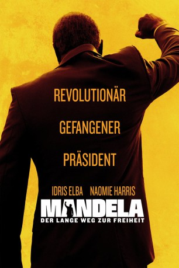

#2703 Mandela: Der lange Weg zur Freiheit
Alternativ: Mandela: Long Walk to Freedom
Auszeichnungen: für 1 Oscars nominiert 1 GoldenGlobes gewonnen
 
 IMDB-Wertung: 7.1 / 10
IMDB-Wertung: 7.1 / 10  Metascore: 60
Metascore: 60 
Mandela: Long Walk to Freedom beruht auf der Autobiographie des 1918 geborenen Nelson Mandela und widmet sich dem bewegten Leben des ersten frei und demokratisch gewählten schwarzen Präsidenten von Südafrika, im Film dargestellt von. Im Biopic wird seine Lebensgeschichte erzählt – von seiner Kindheit bis zu seiner Vereidigung nach der Wahl zum Präsidenten. Während seiner 27 Jahre währenden Inhaftierung (auf Robben Island und später im Pollsmoor-Gefängnis) kämpften seine Anhänger, allen voran seine Frau Winnie Mandela für seine Freilassung.
Jahr: 2013
Dauer: 147 Minuten
FSK: 12
Land: England Studio: Senator FilmTonspuren: DTS - ,
Untertitel: Deutsch, Englisch,
Auflösung: 1080p (1920x816) Größe: 10147 MB
Genre: Drama, Geschichte, Biographie
Regisseur: Justin Chadwick
Drehbuch: William Nicholson, Nelson Mandela
Soundtrack: Alex Heffes
Darsteller:
 Idris Elba als Nelson Mandela
Idris Elba als Nelson Mandela Naomie Harris als Winnie Madikizela
Naomie Harris als Winnie Madikizela Fana Mokoena als Govan Mbeki
Fana Mokoena als Govan Mbeki- Deon Lotz als Kobie Coetzee
- Gys de Villiers als President de Klerk
 Robert Hobbs als Chief Warder
Robert Hobbs als Chief Warder- Armand Aucamp als Warder
- Carl Beukes als Niel Barnard
 Andre Jacobs als Bram Fischer
Andre Jacobs als Bram Fischer Adam Neill als Percy Yutar
Adam Neill als Percy Yutar Jason Cope als Lieutenant Swanepoel
Jason Cope als Lieutenant Swanepoel Patrick John Walton als Policeman
Patrick John Walton als Policeman- Theo Landey als Brian Widlake
 Grant Swanby als Sergeant Vorster
Grant Swanby als Sergeant Vorster- Danie van Rensburg als Sergeant Fourie
- Buyi Mazibuko als Madela and Tambo's Client
- Mark Elderkin als Sophiatown Policeman
- Dylan Horley als Man on Street
- Sivuyile Ngesi als Mandela's Aide
 Richard Lothian als Mandela's Aide
Richard Lothian als Mandela's Aide- Desmond Tutu als Himself , archive footage, uncredited
- Tony Kgoroge als Walter Sisulu
- Riaad Moosa als Ahmed Kathrada
- Zolani Mkiva als Raymond Mhlaba
- Simo Mogwaza als Andrew Mlangeni
- Thapelo Mokoena als Elias Motsoaledi
- Jamie Bartlett als James Gregory
- Terry Pheto als Evelyn Mase
- Zikhona Sodlaka als Nosekeni
- S'Thandiwe Kgoroge als Albertina Sisulu
- Tshallo Sputla Chokwe als Oliver Tambo
- Sello Maake Ka-Ncube als Albert Luthuli
- James Cunningham als George Bizos
- Zenzo Ngqobe als Patrick Lekota
- David Butler als Colonel Badenhorst
 Garth Breytenbach als Warder
Garth Breytenbach als Warder- A.J. van der Merwe als Fanie van der Merwe
 Graham Clarke als Major Marais
Graham Clarke als Major Marais- André Stolz als General Willemse
- Thomas Gumede als Jackson Dladla
- Anrich Herbst als Constable Dirker
- Louis van Niekerk als Quartus de Wet
- Nomfusi Gotyana als Miriam Makeba
- Lionel Newton als Jack Hodgeson
- Michelle Scott als Mrs. de Kok
- Ndoni Khanyile als Lady Client
- Robert Coutts als Policeman
- Wessel Pretorius als Court Officer
- Ronni Gadula als MK Man
- Edgar Sindane als MK Man
Datei: X:\2013(I-M)\Mandela Der lange Weg zur Freiheit (2013, FSK12, 1920x816).mkv seit 03.12.2015
Festplatte: HD 2013(I-Z)-2014(A-Z)
 Es gibt insgesamt 89 Filme in der Gruppe '2013(I-M)'
Es gibt insgesamt 89 Filme in der Gruppe '2013(I-M)'